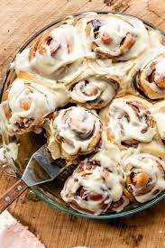

Cinnamon Rolls

Do you love homemade cinnamon rolls, but are nervous to bake with yeast? You’re not alone! But if you’re curious about learning how to bake with yeast, this recipe is a perfect one to start with.
Ingridients
- milk
- sugar
- flour
- butter
- egg
- cinnamon
- brown sugar
Steps
- mix your dry ingredients together in a big bowl
- warm the milk and butter together, and then whisk in the yeast until it has dissolved
- Pour this mixture over the dry ingredients, add the egg and then mix everything together.
- Transfer dough to your work surface, and then knead by hand for 3 minutes until a soft dough forms
- Roll out the dough and then top with softened butter and the brown sugar & cinnamon mixture.
- Roll up the dough and then use your sharpest knife to cut into 10-12 rolls.